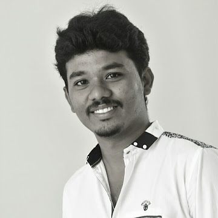

ESAKKI RAJ K

Professional summary
An Efficient individual with extensive expertise in a variety of industries, including mechanical engineering and real estate, who is now eager to explore new talents and take on exciting challenges. 5+ years of strong managerial experience in Long-term staff management, supervision and communication professional; possess exceptional interpersonal skills and the ability to cultivate long-term client relationships.
Additionally, 3 years of previous experience in Quality Engineering and Servicing. An individual with educational qualification of both graduate degree and diploma in Mechanical Engineering.
Education
- 2011-14 B.E | University V.O.C College of Engineering, Tuticorin
CGPA: 8.43/10
- 2009-11 | Diploma in Mechanical Engineering |
St. Xavier’s Polytechnic College, Tuticorin
Percentage: 85.78%
- 2009 Class XII | St. John’s Higher Secondary School (HSCC)
Percentage: 66.75%
- 2007 Class X | St.John’s Hr. Sec. School (SSLC)
Percentage: 75 %
Experience
Manager - Value Associates
Jan 2020 - Augest 2022
- Responsibility to oversee the operational aspects of properties.
- Preparation of financial statements, Supervise maintenance workers, and negotiate contractor, supplier and vendor contracts.
- To Maintain records on taxes, occupancy rates, and lease expiration dates.
Service Manager - Allcool Airconditioning
Jun 2016 - Feb 2019
- Supervision and orientation of technicians for installing, repairing and maintaining heating and air conditioning units on large scale projects.
- Responsibility of meeting goals and maintaining customer satisfaction of the company.
- Oversee the financial feasibility and profit of the projects.
Graduate Trainee
May 2015 - Jun 2016
- Preparation of Weight and CG report of ALH Helicopters.
- Maintaining and Managing progressive activities of Helicopters system integrated parts for defects and resolutions.
- Manually Checking the Critical Parts of Helicopter.
Graduate Trainee
Sep 2014 - Feb 2015
- Inspection for defects and parameters in General Motors of oil Pumps.
- Analysis of manufacturing data against design and quality.
- Maintenance and creation of documents of Inspection and Quality assurance.
Sill Set
Software skills
- MS Office Packages
- AutoCAD, Unigraphics NX
- Team center
Other Skills
- Interpersonal Skills,Emotional Intelligence,Organization.
- Delegation,Decision Making,Team orientation.
Responsibility & Co-Curricular Activities
- Volunteering and Fundraising for Orphans education center (Udhavum Ullangal) at Tirunelveli.
- Coordinator in ME department symposium (2014).
- Participation in CUMTA Logo competition- Jul 2022.
Other